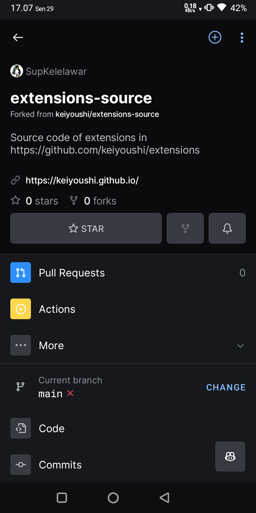
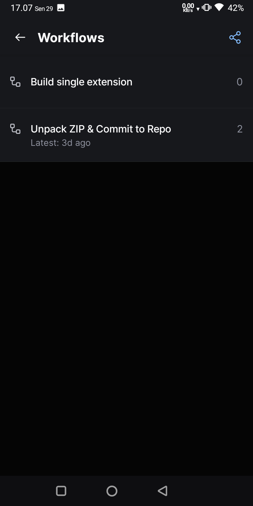
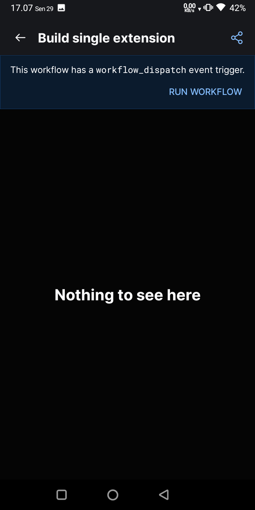
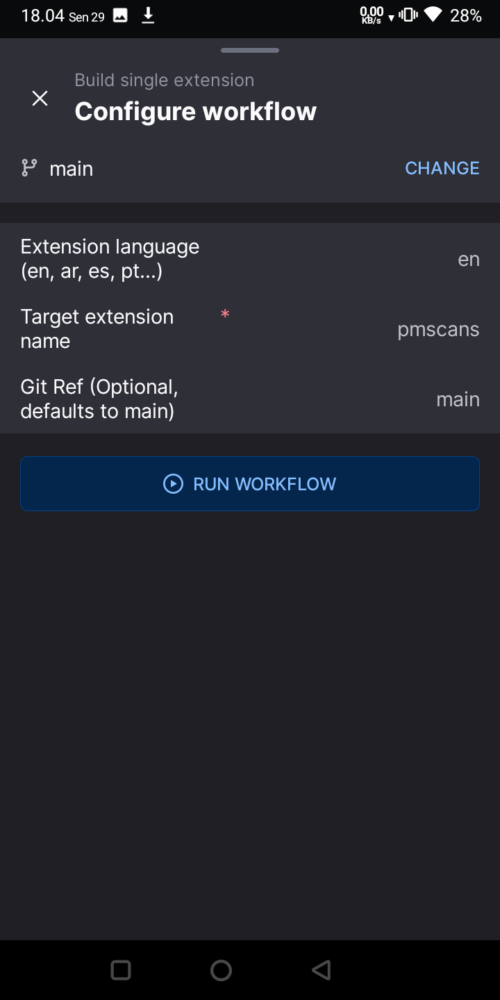
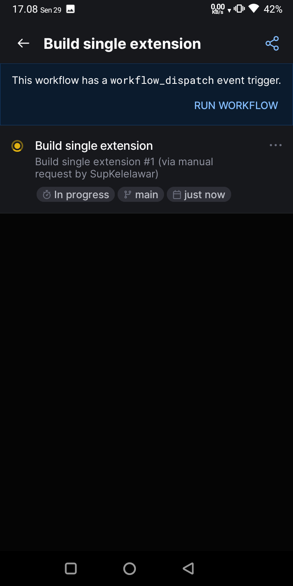
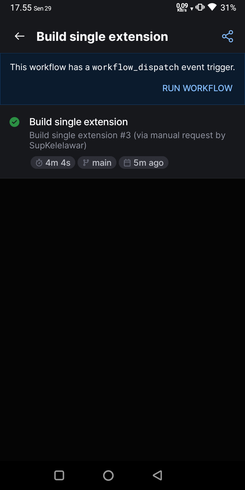
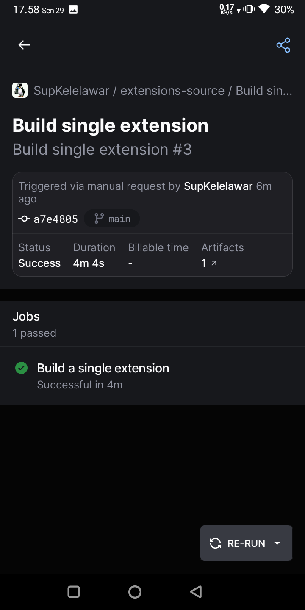
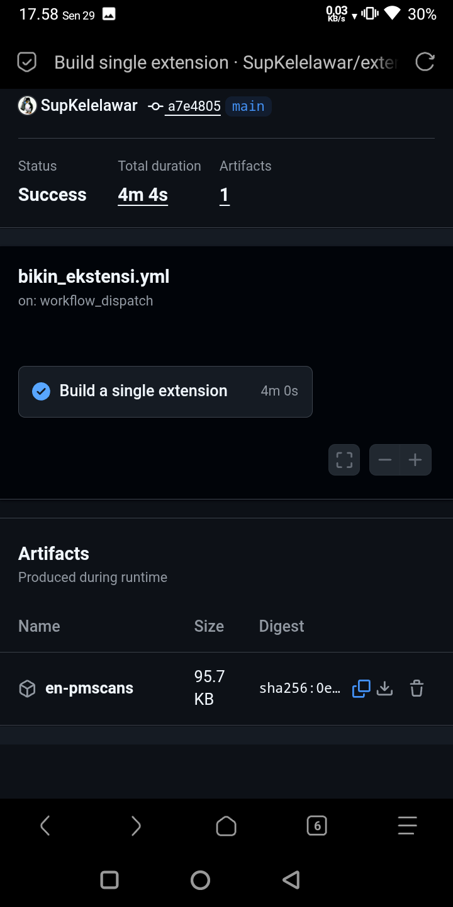

Bikin Ekstensi Via (Github Action)
1. Kalau belum punya akun Github Daftar dulu
2. Fork Repo ane, jangan ubah namanya nanti gak cocok dengan workflow di github action yang udah ane set default (Via AI), langsung aja scroll kebawah dan klik Create Fork
3. Klik tombol Actions pojok kanan atas, kalo gak ada klik titik 3 yang ada di bawah foto profil kalian, setelah klik bakal minta konfirmasi dengan tulisan hijau I Understand blabla, klik aja buat, tujuannya buat ngasih izin pakai Github Action
4. Kalo udah selesai saatnya eksekusi, dan disarankan pakai aplikasi Github Mobile, donlod dulu karna lebih mudah pake Apk, login pakai akun github kalian tadi
Q: Kenapa gak pake apk aja dari awal?
A: pake web cuman buat ngasih izin github Action aja, bisa sih pake web buat bikin ekstensinya, tapi paling mudah pake apk
5. Setelah semua siap, masuk ke Tutor
buka Repo hasil fork tadi lalu klik Actions yang warna kuning

Pilih Build Single Extensions

Klik RUN WORKFLOW

6. Bagian ini jangan sampai salah
Extensions language: tentukan untuk kode bahasa, en untuk inggris, id untuk indonesia dan lainnya, silahkan cari tau di google tentang kode bahasa kalo blom banyak yang diketahui (sama ane juga) sapa tau butuh
Target extensions name: nama ekstensi, ekstensi harus udah ada di daftar kode sumber, kalo blom ada maka build akan gagal
Git Ref: branch, biarin aja default
jangan sampe salah set, misal kode bahasa set ke id, nama ekstensi set ke asurascans, build ini akan gagal karna di kode sumber id blom ada asura
Kalau udah set semua, klik tombol RUN WORKFLOW

Silahkan refresh kalau gak muncul progress buildnya, kalo dah muncul tunggu aja, gak lama, paling 4 atau 5 menit, tutup apknya juga gpp sambil scroll fesnuk dulu

Kalau sekiranya dah yakin selesai silahkan di cek, kalo gak gerak tinggal refresh aja

Kalo sukses tinggal klik angka 1 di tulisan Artifacts, nanti disuruh milih buka di browser mana kalau lebih dari satu browser, saran ane buka di browser yang dah login akun Github tadi

scroll kebawah kalo gak mau scroll otomatis, di pojok kanan bawah ada tombol download hasil build tadi tapi mepet dengan tombol hapus, kalo kepencet gak ada nego nego, hasil build langsung terhapus, terpaksa build ulang, di zoom aja bagian itu biar enak klik donlod nya

Tinggal pasang sih, klik percaya dibagian menu ekstensi kek biasanya biar muncul